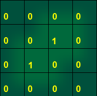
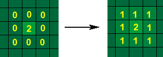
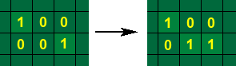
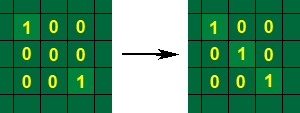
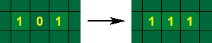
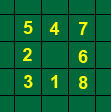

Limited editor je aplikace pro editaci map, terénù, herních pøeká�ek a dalších nastavení pro hru Unlimited Racer. Editor je okenní aplikace pro Windows naprogramována v C++ pomocí Microsoft Visual Studia 2005. Editor pou�ívá knihovny WIN32 API, MFC a nìkteré funkce z Resource Manageru. Aplikace je psaná v architektuøe dokument/pohled.
Obrázek 6.1: Základní model tøíd editoru.
Objekt CMapEditorDoc obsahuje data pro editor. Stará se o jejich úpravu, naètení a ulo�ení. Souèástí jsou také informace o aktuální nastavení a stavu editoru.
Jednotlivé objekty, které se vkládají do mapy jsou ulo�eny v poli ukazatelù na CMainObject indexovaném názvem souboru *.object. Objekty se primárnì naèítají za pomoci resource manageru pøi nahrávání stromu objektù. Sekundárnì se pøidávají z naètené mapy nebo mù�ou bıt pøidány u�ivatelem. Pøi prvním naètení objektu se vytvoøí 2 masky pro danı objekt. První maska zobrazuje obsazení jednotlivıch políèek modely a texturami. Druhá maska zobrazuje políèka, na kterıch je tráva.Také se zkontroluje, zda objekt má ikonu, pokud ikonu nemá, je mu vygenerovaná ikona obsahující stejná èísla, která urèují poøadí objektu bez ikony.Èíslo se zobrazí na ka�dém políèku objektu, které je obsazeno texturou nebo modelem.
Objekt CGameMap obsahuje data a metody tıkající se mapy a terénu. Místa ulo�ení objektù v mapì a nastavení mapy se naèítá za pomoci resource manageru ze souboru *.urmap. Tento soubor také obsahuje jméno souboru s pøíslušnım terénem, kterı se naèítá z *.terrain.
Samotná mapa a terén je ulo�ena jako pole objektù typu CMapObject. Ka�dı CMapObject obsahuje pøedevším objekt, kterı je polo�en na daném políèku a informace o vıšce terénu.
Pøi ukládání terénu je potøeba zjistit, jaké terénní pláty jsou na jednotlivıch políèkách. Odlišujeme následující pláty: roh kopce, vnitøní roh kopce a stìna kopce. Aby pøechody u kopcù nebyly ostré, všechny pláty se ještì dìlí na pláty: plát vıšky 1, pata kopce, vršek kopce a støed kopce. Ka�dı tento plát mù�e mít rùzného souseda a tak jsou ještì rozdìleny, dle typù jejich hran. Pláty jsou vygenerované pomocí Terrain Generatoru.
Pro ka�dé políèko terénu se také ulo�í textura s náhodnou orientací, textury jsou definovaná v souboru *.Textset. Pokud je v souboru definováno více textur, textury jsou rozmis�ovány náhodnì, dle pravdìpodobností ulo�enıch té� v souboru textureset. Podle umístìnıch objektù a vygenerované masky pro danı objekt se nastaví pøítomnost trávy na dané políèko.
Závodní tra� je ulo�ena jako seznam lineárních spojovıch seznamù objektù (CMapMainObject) umístìnıch v mapì. Pokud cesta nebyla editovaná u�ivatelem, v�dy se pøi ulo�ení pokusí map editor najít nejvhodnìjší cestu.
Algoritmus hledání závodní tratì:
Pro mapu se ukládají další nastavení jako je skysystem, standardní èas mapy, velikost mapy,barva ambientního svìtla v mapì, startovní pozice atd. Startovní pozice je speciální objekt v mapì. Do souboru se ukládá jako odkaz na soubor *.object (objekt obsahuje klíè startingposition=1), jeho otoèení a pozice v mapì. V mapì startovní pozice musí bıt polo�ena, jinak editor nedovolí mapu ulo�it. Od startovní pozice se automaticky dopoèítává závodní tra� (pokud nebyla definována u�ivatelem), jestli�e se nepodaøí zjistit ani jeden objekt ze závodního okruhu, editor nedovolí mapu ulo�it a vyzve u�ivatele k ruènímu nastavení okruhu.
Strom objektù uchovává seznam všech objektù pou�itelnıch v mapeditoru. Strom je odvozenı od MFC tøídy CTreeCtrl a je souèástí objektu CEditorTree, kterı obsahuje funkce pro naètení, ulo�ení stromu a práci se stromem. Struktura stromu je ulo�ená v souboru objects.tree. Strom se naèítá pøi spuštìní aplikace. Pokud pøi naèítání objekt neexistuje, nebude do stromu pøidán. Pøi naèítání mapy se objekty, které nejsou ve stromì obsa�eny a jsou obsa�eny v mapì, pøidají do stromu.
CMapEditorDoc také ukládá aktuální objekt a jeho vlastnosti (rotaci pozici v mapì). Objekt se vybírá ze stromu objektù,èi pøímo z mapy. Objektu obsahuje taky v jakém editaèním stavu se editor nachází a informace o zmìnách, které byly provedeny.
Editor je rozlo�en do nìkolika pohledù. Ka�dı pohled zobrazuje data z (CMapEditorDoc) a umo�òuje práci s nimi.
Pohled zobrazuje ikonu objektu, kterı je vybrán ve stromì objektù. Pohled obsahuje 2 tlaèítka, které slou�í k otáèení objektu. Na ikonu jsou dokresleny modrou èárou jeho waypointy.
Map view zobrazuje pohled na mapu. Proto�e mapa je vìtší ne� samotnı pohled, jsou pou�ity posuvníky. Mapa se vykreslí nejdøíve do bufferu o velikosti vıøezu mapy, kterı je zrovna zobrazen. Pak je celı buffer okopírovanı na obrazovku.
Terén je zobrazen odstíny zelené barvy. Vyšší vıškovı stupeò je svìtlejší. Pøi spuštìní map editoru se vygenerují bitmapy, které zobrazují pøechody mezi jednotlivımi vıškovımi stupni (stìna kopce, roh kopce). Bitmapa je ètvercová a ka�dému vrcholu ètverce je na základì vıšky vedlejšího políèka pøiøazena barva. Políèko je pak vygenerováno pomocí cosinové interpolace (obr. 6.2). Pøi vykreslení mapy se zkontroluje okolí políèka a na základì okolních vıškovıch stupòù se vybere a otoèí správná bitmapa.

Obrázek 6.2: Kopec vıšky jedna. Èísla zobrazují ulo�ené vıškové stupnì políèek.
Objekt v mapì je zobrazen jako ikona. Jméno souboru s ikonou je ulo�en v souboru *.object. Ikona je zmenšená, èi zvìtšená do velikosti objektu pro zobrazení do mapy. Transparentní barva ikony má hodnotu #FA36C5. Na ikonu jsou modrou èarou zobrazeny jednotlivé cesty tvoøené waypointy.
Mainobjekty, které le�í na trati jsou zvıraznìny modrou barvou. Ka�dı zaèátek spojité cesty je oznaèen èíslem.
Pohled zobrazuje strom objektù, které mù�ou bıt pøidány do mapy. Strom je slo�en z uzlù (skupina objektù) a z listù(jednotlivé objekty). Pohled na strom je odvozenı od tøídy CTreeView, která je souèástí MFC.
Terén je matice políèek, která obsahuje jednotlivé vıšky. Terén se edituje zvyšováním nebo sni�ováním jednotlivıch políèek. Proto�e celı terén se skládá z vygenerovanıch plátù, tak rozlo�ení vıšek terénu nemù�e bıt libovolné a musí se øídit následujícími pravidly:

Obrázek 6.3: Situace porušující pravidlo a jejich vyøešení pøi zvyšování terénu (èíslo zobrazuje vıšku políèka):



Obrázek 6.4: Situace porušující pravidlo a jejich vyøešení pøi zvyšování terénu (èíslo zobrazuje vıšku políèka):
Algoritmus zvıšení terénu:
Obrázek 6.5: Èísla zobrazují jedno z mo�nıch poøadí, v kterém jsou vybírána jednotlivá pole ke sní�ení.
Ka�dı objekt má ulo�enou masku, která ukazuje, kde jsou polo�eny objekty a textury.Na ka�dım místì v mapì mù�e bıt umístìní pouze jeden model nebo textura.
U�ivatel má mo�nost nadefinovat si vlastní závodní tra�. Tra� se edituje v race course edit modu. V�dy kdy� klikne na nìjakı objekt v mapì editor se pokusí najít co nejdelší spojitou cestu od místa, kde je object umístìn. Viz algoritmus v kapitole 2.2.2. Pokud mu nevyhovuje tato cesta mù�e kliknutím na objekt odmazat cestu a� k tomuto objektu. Cesta mù�e vést pouze pøes objekty s waypointy.
Strom se edituje pøes kontextové menu, které se objeví po stisknutí pravého tlaèítka. Ve stromu se dají vytváøet nové objekty mù�ou se vyjímat a vkládat celé vìtve. Pokud se pøidá nová polo�ka do stromu, tak se mu mù�ou pøidat potomci - stane se uzlem a nebo se k nìmu pøiøadí nìjakı soubor *.object a v tom pøípadì se stane listem a objektem, kterı lze umístit do mapy.
Editor obsahuje pomocnı nástroj pro editaci souborù. Dialog obsahuje 2 pomocná okna viz. 3.4.3 Obsah pravého okna je ulo�en v souboru *.dlghlp. Pøi poklepání se vlo�í text, kterı je definován v souboru pod danım návìštím(øádek zaèínající --). Pokud øádek obsahuje %%typ, vyvolá dialog naèítací dialog pro danı typ a vrátí do editu jméno vybrané polo�ky.